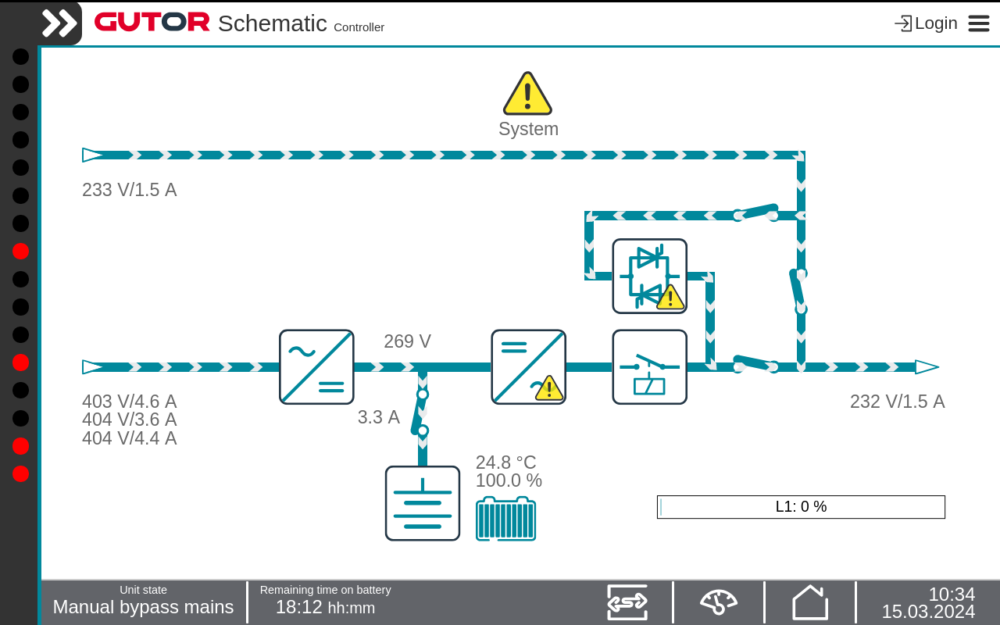

| DANGER |
|---|
|
HAZARD OF ELECTRIC SHOCK, EXPLOSION, OR ARC FLASH
Hazardous voltages are present at some circuits, terminals
and switches when the system is in manual bypass.
|
| Notice |
|---|
|
LOSS OF BATTERY BACKUP
When the BreakersPB_xx005 is closed
there is no backup from the battery in case the bypass mains becomes
unavailable.
|
Important: This mode is a temporary mode and should not be used for an extended
period of time.
-
On the Display check that the inverter
is supplying the load, and that the bypass is available and within
tolerance.
-
Press
the Switch operation icon in the Status bar.
-
Press
the Force bypass operation button.
Confirm the change.
Note: The
current active inverter operation mode is indicated by the green icon.
-
Close the BreakersPB_xx005.
-
Press
the Home icon and check that the power flow
indicates manual bypass and that the Unit
state is Manual bypass mains.

-
Press
the Switch operation icon in the Status bar.
-
Press
the Switch system off button. Confirm the change.
-
Open the BreakersPB_xx052.
-
Open the BreakersPB_xx004 to disconnect the battery.
-
Open
the BreakersPB_xx001 to disconnect the rectifier
mains from the rectifier.
-
Open
the BreakersPB_xx051 to isolate the static
switch from the bypass mains.
The Display turns off.
The system is in manual bypass operation, the load is supplied
from the bypass. The rectifier and inverter are turned off.